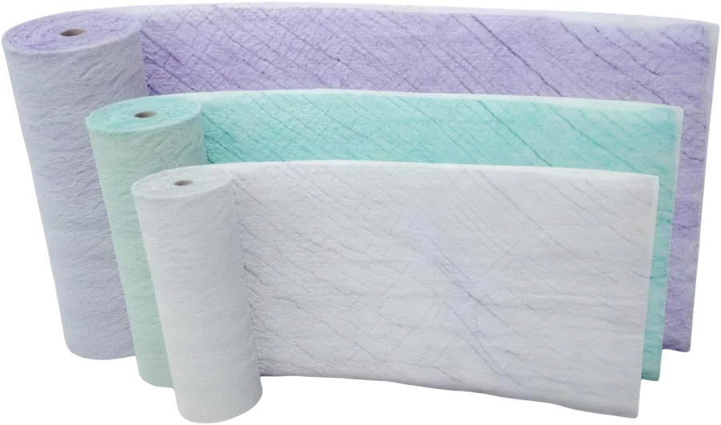
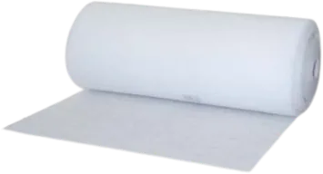
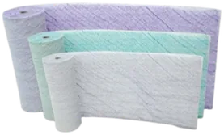
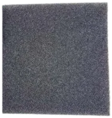
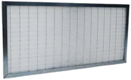

- Classe G
Filtrazione primaria
La filtrazione in classe G: prefiltri su misura e celle per il condizionamento civile. È il primo stadio dell’impianto, protegge i filtri che vengono dopo e ne allunga la vita.
- Prefiltrazione su misura
- Condizionamento civile
- Cabine di verniciatura
- Impianti HVAC
Schede tecniche51

Setti filtranti sintetici

Setti filtranti in fibra di vetro

Setti filtranti poliuretanici
Filtri per verniciatura
